Lecture 16: Alignment — RL 1
These notes cover the second part of the lecture on post-training methods for language models, focusing on Reinforcement Learning from Verifiable Rewards (RLVR). The lecture revisits DPO and PPO, introduces GRPO, and then delves into case studies of recent open models that utilize RLVR, such as DeepSeek R1, Kimi 1.5, and Qwen 3.
TL;DR
- RLHF Limitations: Overoptimization and mode collapse are significant problems in RLHF, often stemming from the noisiness and complexity of human preferences.
- RLVR as a Solution: Reinforcement Learning from Verifiable Rewards (RLVR) offers a path to scale RL by using objective, verifiable rewards (e.g., correctness in math problems) instead of human feedback, mitigating overoptimization.
- GRPO: A Simpler PPO: Group Relative Policy Optimization (GRPO) simplifies PPO by removing the value function and using a z-score within groups for advantage computation, making it easier to implement and scale.
- DeepSeek R1 & Kimi 1.5: These models demonstrate that simple RL recipes (like GRPO) on verifiable rewards can achieve O1-level reasoning performance, highlighting the importance of data curation and efficient RL algorithms.
- Qwen 3: Advanced Control: Qwen 3 introduces "thinking mode fusion" for fine-grained control over CoT length and early stopping, enabling a single model to adapt its reasoning process based on budget.
Key Concepts
- DPO (Direct Preference Optimization)
- PPO (Proximal Policy Optimization)
- TRPO (Trust Region Policy Optimization)
- GRPO (Group Relative Policy Optimization)
- RLHF (Reinforcement Learning from Human Feedback)
- RLVR (Reinforcement Learning from Verifiable Rewards)
- Overoptimization / Overfitting
- Mode Collapse / Calibration
- Policy Gradients
- Advantage Estimation
- Value Function
- Reward Shaping
- Length Normalization
- SFT (Supervised Fine-Tuning)
- CoT (Chain-of-Thought)
- Distillation
- Thinking Mode Fusion
- Inference Efficiency
[00:00] Introduction: RL from Verifiable Rewards
The lecture begins by finishing the remaining content from the previous session on RLHF and then transitions to Reinforcement Learning from Verifiable Rewards (RLVR), a new and exciting development in language model training.
[00:05] RLHF Recap and Challenges
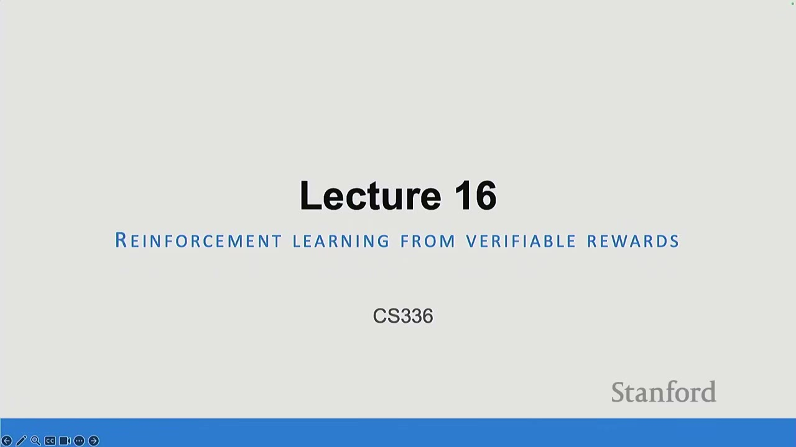
The lecturer provides a quick recap of RLHF and DPO, emphasizing the core idea of maximizing an underlying reward based on pairwise preference data.
[00:40] DPO - RLHF without tears?
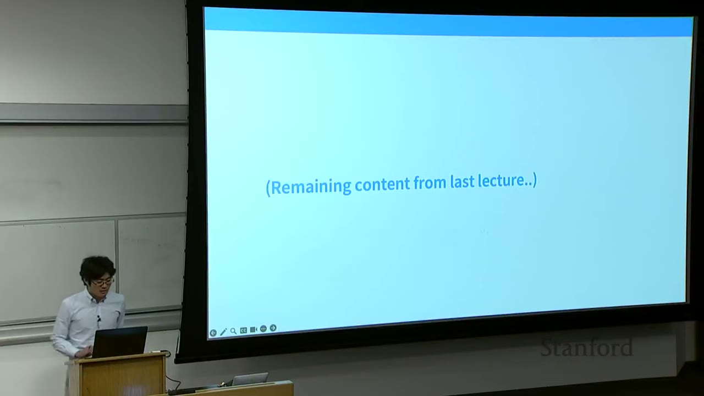
DPO simplifies PPO by getting rid of the reward model and on-policy rollouts. Instead, it takes gradient steps on log-loss of good stuff and negative gradient steps on bad stuff (appropriately weighted).
$$ \mathcal{L}_{\text{DPO}}(\pi_\theta; \pi_{\text{ref}}) = \mathbb{E}_{(x, y_w, y_l) \sim \mathcal{D}} [-\log \sigma(\beta \log \frac{\pi_\theta(y_w|x)}{\pi_{\text{ref}}(y_w|x)} - \beta \log \frac{\pi_\theta(y_l|x)}{\pi_{\text{ref}}(y_l|x)})] $$
The key steps for DPO are: 1. Make a nonparametric assumption (policy class is the set of all functions). 2. Parametrize reward $r$ via the policy. 3. Optimize the reward via supervised losses (which in turn, optimizes the policy).
This makes DPO essentially supervised learning on a reparameterized objective.
[02:03] DPO Updates and Components
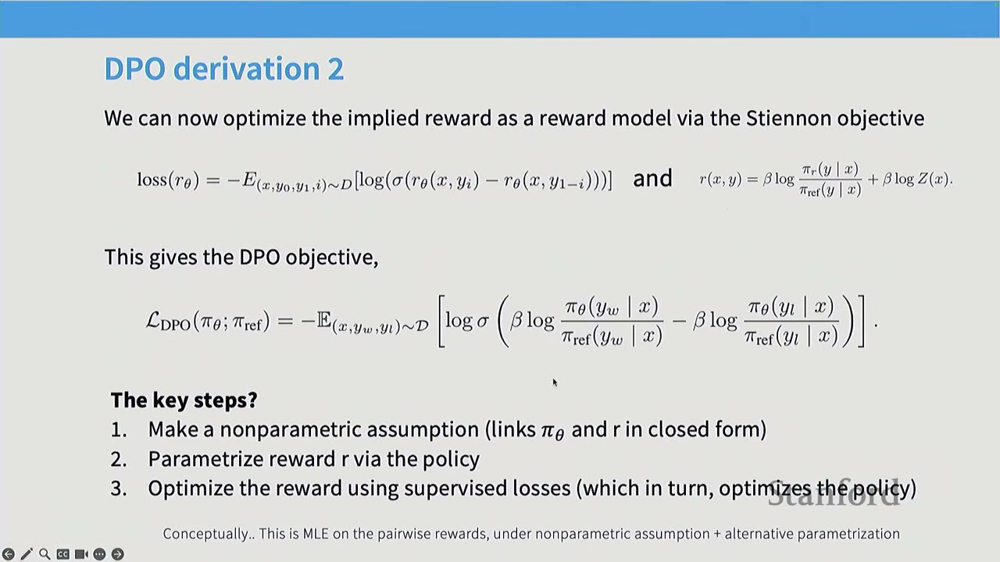
DPO updates can be written in a nice form where the gradient steps are scaled by $\beta$ (regularization). Updates are weighted higher when reward estimates are incorrect. The likelihood of good examples is increased, and the likelihood of bad examples is decreased.
$$ \nabla_\theta \mathcal{L}_{\text{DPO}}(\pi_\theta; \pi_{\text{ref}}) = -\mathbb{E}_{(x, y_w, y_l) \sim \mathcal{D}} [\sigma(\beta(\hat{r}_\theta(x, y_l) - \hat{r}_\theta(x, y_w))) \cdot \beta \left( \nabla_\theta \log \pi_\theta(y_w|x) - \nabla_\theta \log \pi_\theta(y_l|x) \right)] $$
This means "positive gradient on good, negative gradient on bad."
[03:00] DPO Works Pretty Well
For a while, DPO was the dominant approach for post-training in open-source models due to its ease of implementation compared to PPO.
[03:19] Variants
A flood of DPO variants emerged, often denoted as "PO". Two notable variants are: - SimPO (Simple Preference Optimization): Normalizes the update size by the length of responses and removes the reference policy. While losing the mathematical argument of DPO, it aligns with the "upweight good, downweight bad" intuition. - Length Normalized DPO:* Normalizes by length without removing the reference policy.
[04:35] PPO Does Too (and Sometimes Better?)
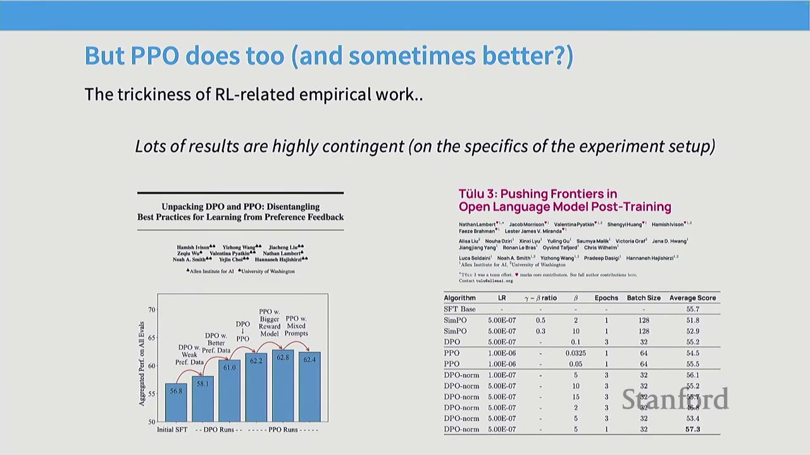
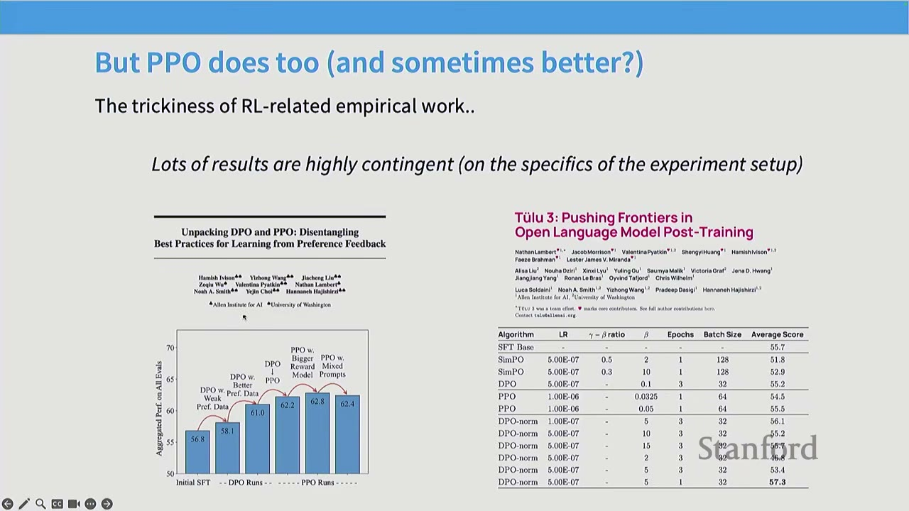
The empirical findings in RL are highly contingent on the specific experimental setup. Different environments, base models, and post-training preferences can lead to different conclusions. For example, some AI2 work initially found PPO to be better than DPO, but later found that a better SFT method could negate these gains, with DPO with normalization performing best. This highlights the need for caution when generalizing results from a single paper.
[06:01] Things to Watch Out For in RLHF
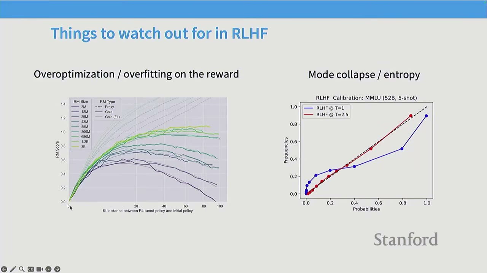
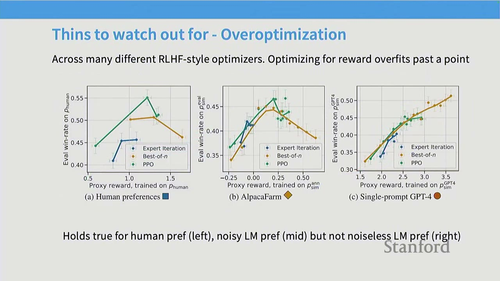
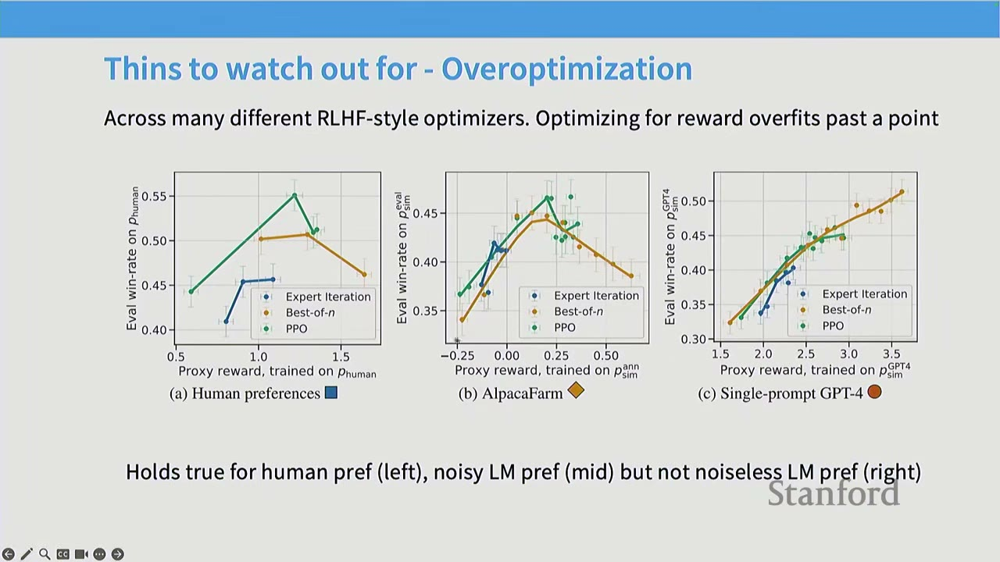
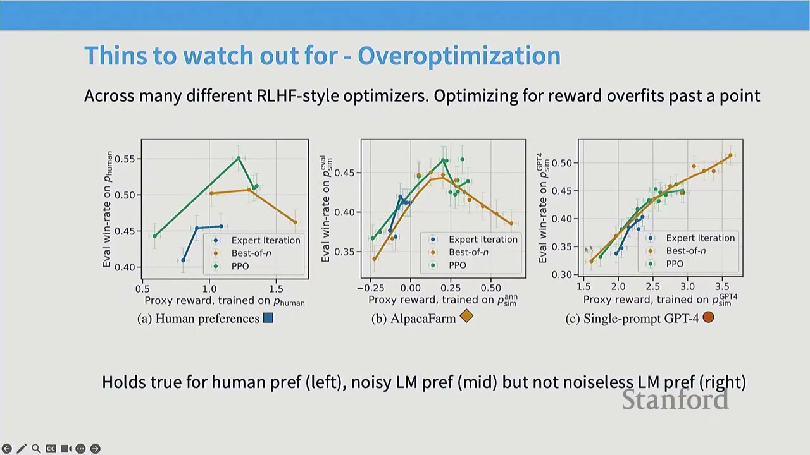
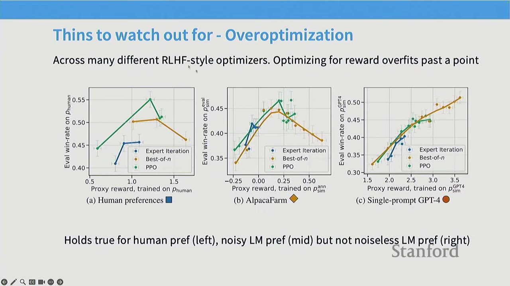
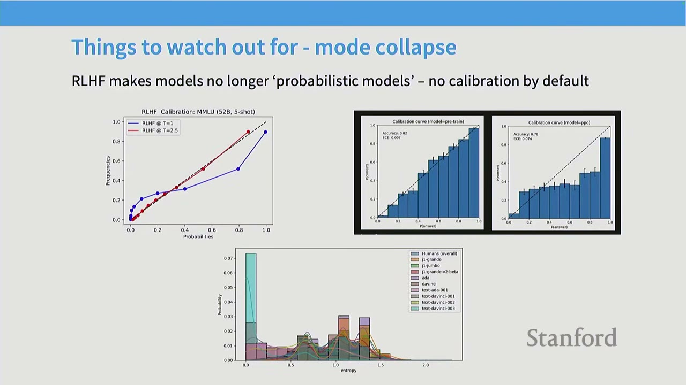
- Overoptimization / Overfitting on the Reward: As RL training progresses, the model's performance on the learned reward model initially improves, but eventually diverges from true human preferences. This is essentially overfitting to the reward model, which is often noisy and complex. This phenomenon is observed with human preferences and noisy AI feedback, but not with clean, noiseless AI feedback.
- Mode Collapse / Entropy: RLHF makes models less probabilistic and calibrated by default. Unlike pre-training or supervised fine-tuning, RLHF is not about matching a distribution. This often leads to models exhibiting overconfident behavior, as calibration is not part of the reward signal. It's crucial not to treat RLHF models as calibrated probabilistic models.
[09:05] The Class Thus Far
The discussion so far has focused on pre-training and RLHF, leading to models like GPT-3.5. The next part of the lecture will transition to RLVR, which is enabling the development of reasoning models like O1.
[11:50] Q&A on RLHF
Q: What do the x and y axes represent in the overoptimization graph? A: The x-axis represents the success of the RL algorithm in optimizing the proxy reward classifier (e.g., how well PPO optimized the reward model). The y-axis represents true win-rates, measured by fresh human votes or AI feedback. The graph shows that succeeding in RL doesn't guarantee success in the actual task, as models can overfit to human preferences.
Q: Why are the ratios of policies used in DPO, not just the difference of log probabilities? A: The ratios are a compact and intuitive way to represent the underlying mathematical argument of DPO. While taking the difference of log probabilities is computationally equivalent, the ratio form is often used for theoretical clarity. When moving to SimPO, the mathematical argument changes, as it's no longer strictly about ratios of policies.
Q: How is the ground truth of the reward measured in the overoptimization graph? A: The x-axis measures the performance on the fitted reward model (train set), while the y-axis measures performance on fresh samples from the true reward oracle (test set). This is analogous to a train-test gap in machine learning, where the model overfits to the training data.
[12:25] The Goal: Expand the Scope and Power of RL
The core idea behind RLVR is to leverage the power of RL in domains where objective, verifiable rewards are available, similar to how AlphaGo or AlphaFold excelled. This avoids the limitations of human feedback (noisiness, scalability, overoptimization) and allows for more efficient and robust training.
[13:30] Lecture Today
The lecture will proceed in two parts: 1. Core Algorithms: A detailed discussion of PPO, its transformation into GRPO, and various GRPO variants. 2. Case Studies: An examination of three prominent open models (DeepSeek R1, Kimi 1.5, and Qwen 3) that utilize RLVR, providing practical examples of the concepts discussed.
[14:30] Recap: PPO in Theory
PPO (Proximal Policy Optimization) is a policy gradient method for optimizing rewards in actual RL tasks. The lecturer explains PPO by starting from the simplest policy gradient and progressively adding complexities.
[14:50] Attempt 1: Policy Gradients (Variances are Too High)
The simplest approach is to optimize the expected reward under the policy $\pi_\theta$ using gradient ascent. The policy gradient theorem states that the gradient of the expected reward is:
$$ \nabla_\theta \mathbb{E}_{P_\theta}[R(Z)] = \mathbb{E}_{P_\theta}[R(Z) \nabla_\theta \log P_\theta(Z)] $$
This means taking gradient steps proportional to the reward, increasing the probability of actions that lead to high rewards. However, the variance of these gradients can be very high.
[15:28] Attempt 2: TRPO (Trust Region Policy Optimization)
To address high variance and improve sample efficiency, TRPO linearizes the problem around the current policy. Instead of sampling from the current policy $\pi_\theta$ for every gradient step, TRPO samples from an older policy $\pi_{\text{old}}$ (or $\pi_k$) and uses importance sampling to correct the gradients. To prevent the new policy from diverging too much from the old one, a KL divergence constraint is added.
$$ \max_\theta \mathbb{E}_{(s,a) \sim \pi_{\text{old}}} \left[ \frac{\pi_\theta(a|s)}{\pi_{\text{old}}(a|s)} \hat{A}_{\text{old}}(s,a) \right] \quad \text{subject to} \quad \mathbb{E}_{s \sim \pi_{\text{old}}} [D_{\text{KL}}(\pi_\theta(\cdot|s) || \pi_{\text{old}}(\cdot|s))] \le \delta $$
Here, $\hat{A}_{\text{old}}(s,a)$ is an advantage estimate, a lower-variance version of the reward.
[17:00] Attempt 3: PPO (Clip the Ratios at Some Epsilon)
PPO simplifies TRPO by replacing the explicit KL divergence constraint with a clipping mechanism. The objective function for PPO is:
$$ L(s, a, \theta, \theta_{\text{old}}) = \min \left( \frac{\pi_\theta(a|s)}{\pi_{\theta_{\text{old}}}(a|s)} \hat{A}(s,a), \text{clip}\left(\frac{\pi_\theta(a|s)}{\pi_{\theta_{\text{old}}}(a|s)}, 1-\epsilon, 1+\epsilon\right) \hat{A}(s,a) \right) $$
This clips the ratio of new to old policy probabilities, effectively limiting how much the policy can change in a single step. This prevents large, destabilizing updates and encourages the policy to stay close to the previous one without an explicit KL constraint.
[17:30] PPO in Practice
PPO is a very successful RL algorithm, used in various environments from simple toy tasks to complex games like Dota 2 (OpenAI Five). However, implementing PPO in practice is notoriously difficult. The blog post "The 37 Implementation Details of Proximal Policy Optimization" highlights the complexity and the sensitivity of PPO to implementation choices. Different implementations can lead to vastly different performance, and even slight errors can lead to incorrect policy gradients that surprisingly sometimes perform better. This underscores the empirical nature of RL and the need to carefully examine implementation details.
[19:35] PPO - Idealization (?) for Language Models
Applying PPO to language models involves a complex setup: - SFT Model: A supervised fine-tuned model. - Reward Model: Learned from human feedback. - Value Model: A neural network that estimates expected rewards, used for variance reduction in advantage estimation. - GAE (Generalized Advantage Estimation): A sophisticated method for estimating advantages. - Policy LM: The language model being trained. - Replay Buffer: Stores past experiences for off-policy learning.
This intricate machinery is necessary for PPO to work in the context of language models.
[20:13] PPO in Practice - An Implementation
The lecturer refers to an implementation of PPO from AlpacaFarm, which has been somewhat tested. The code snippet shows the outer loop of PPO, which involves: 1. Getting rollouts (trajectories) from the current policy. 2. Computing losses based on these rollouts. 3. Performing backpropagation and gradient steps (with clipping). 4. Updating the optimizer.
This structure is common in many RL algorithms.
[21:17] PPO in Practice - Loss Computation
The loss computation in PPO involves two main parts: 1. Value Function Loss: Measures how close the predicted value from the value function is to the actual returns (rewards). This helps the value function provide accurate variance reduction. 2. Policy Loss: Computes the PPO-Clip objective, comparing the current policy's log probabilities to the reference policy's log probabilities, weighted by advantages, and clipped within a range (e.g., $\pm 0.2$).
[22:15] PPO in Practice - Rollouts
Rollouts involve generating sequences from the current policy. This is where the complexity arises: - Tokenization: Different models (policy, reward, value) might have different tokenizers, requiring retokenization. - Evaluation: Feeding rollouts into the models to get log probabilities, rewards, and values.
[22:41] PPO in Practice - Reward Shaping
Reward shaping is often used to make the reward signal more amenable to RL algorithms. In PPO, this involves: - Per-token KL penalty: A regularization term computed for each token, encouraging the policy not to deviate too much from the reference policy. - Last-token full reward: The main task reward (e.g., success/failure) is applied only at the last token of the sequence.
The KL term is often clamped to 0 to avoid numerical instability when the log-ratio becomes too negative, which is an approximation rather than a true KL divergence.
[25:52] PPO in Practice - Generalized Advantage Estimate
Instead of directly using rewards, PPO uses generalized advantage estimation (GAE) to reduce variance in policy gradients. GAE is a discounted sum of advantages, where the advantage is the difference between the reward and a baseline (often the value function). The hyperparameters $\lambda$ and $\gamma$ control the trade-off between bias and variance. A common simplification is to set $\gamma = \lambda = 1$, which reduces GAE to a simple baseline policy gradient.
[26:59] What to Expect in PPO?
In a contextual bandit setting like language model generation, PPO typically shows: - Increasing overall rewards. - Increasing reward model scores. - Negative KL rewards (as the policy deviates from the reference).
[27:33] Why Do We Need Yet Another RL Algorithm?
The complexities of PPO (complicated implementation, memory-hungry value model) and the limitations of DPO (data not inherently pairwise, offline nature) motivate the search for simpler and more efficient RL algorithms for language models.
[28:58] New Kid on the Block: GRPO
GRPO (Group Relative Policy Optimization) aims to simplify PPO while retaining its benefits. - Start with PPO: GRPO builds upon the core ideas of PPO. - Remove Value Function / Advantage Computation: GRPO eliminates the need for a separate value function and complex advantage estimation. - Calculate Advantage as "z-score within group": The advantage for a given response is calculated as its z-score (reward minus mean, divided by standard deviation) relative to other responses within the same group (e.g., responses to the same prompt).
A "group" typically refers to all responses generated for a single input prompt. This group-wise z-score normalization acts as a baseline, accounting for varying problem difficulties.
The GRPO objective is: $$ \max_\theta \mathbb{E}_{G \sim \mathcal{D}} \left[ \frac{1}{|G|} \sum_{i=1}^{|G|} \left( \frac{\pi_\theta(a_i|s_i)}{\pi_{\text{old}}(a_i|s_i)} \hat{A}_i \right) - \beta D_{\text{KL}}(\pi_\theta || \pi_{\text{old}}) \right] $$ where $\hat{A}_i = \frac{r_i - \text{mean}(r_1, \dots, r_{|G|})}{\text{std}(r_1, \dots, r_{|G|})}$.
In the online case (rollout + immediate update), GRPO simplifies to a policy gradient with group-normalized rewards.
[30:00] Q&A on GRPO
Q: When you say "group," does it mean multiple answers for one question, or multiple questions? A: For each question (Q), GRPO samples a group of outputs (G). So, for a single question, you generate multiple responses, and these responses form a group. The baselining (mean and standard deviation) is applied within this group. Across different questions, there's no explicit baselining, only the policy updates.
Q: What about the DKL term in GRPO? A: The DKL term in GRPO is a slightly non-standard estimate of KL divergence. Instead of just the average log-ratio, it includes additional terms related to the ratio of reference to current policy probabilities, which act as a control variate to reduce variance.
[30:50] GRPO is Simple (Thanks to Lack of Value Function)
GRPO implementations are typically much simpler than PPO because they don't require a value function. The core steps involve: - Compute reward for each rollout. - Mean/variance normalization per group. - Compute KL term. - Gradient updates on the loss.
[31:10] GRPO Doesn't Use a "Valid" Baseline
Recent analyses of GRPO have identified two mathematical "issues": 1. Division by Standard Deviation: Dividing by the standard deviation in the advantage calculation is not a valid baseline that preserves unbiasedness. This breaks the theoretical guarantee of the policy gradient theorem. 2. Length Normalization: The GRPO objective implicitly normalizes rewards by the length of the output. This creates an incentive for the model to produce very long responses when incorrect (to minimize negative reward per token) and very short responses when correct (to maximize positive reward per token). This leads to models "BS-ing" as aggressively as possible.
These issues can lead to unintended behaviors, such as models generating overly long or short responses to manipulate the reward signal.
[32:10] Length Biases of GRPO
The standard deviation term in GRPO upweights problems that are either too easy or too hard (where variance is low), potentially slowing convergence. The length normalization term incentivizes longer responses for negative advantages and shorter responses for positive advantages.
If these issues are fixed, models show improved reward curves and output lengths that stabilize rather than growing unboundedly. This suggests that some of the very long CoTs observed in GRPO might be an artifact of these implementation choices rather than an inherent property of reasoning.
[33:00] Case Studies of RLVR
The lecture will now examine three representative open models that utilize RLVR: DeepSeek R1, Kimi 1.5, and Qwen 3.
[33:10] DeepSeek R1
DeepSeek R1 is a paper that launched a significant social phenomenon, demonstrating O1-level reasoning performance with a surprisingly simple RL recipe. - Performance: Achieves performance exceeding OpenAI O1. - RL Recipe: The RL recipe is remarkably simple, lacking complex search or process reward models. This challenged the prevailing belief that such complexities were necessary for reasoning models. - Insights: Provides insights into the interaction between SFT and RL.
[34:00] Algorithm - GRPO
DeepSeek R1 builds on the results of GRPO from DeepSeekMath. However, unlike DeepSeekMath, R1 does not use process supervision (intermediate step rewards) in its GRPO implementation.
[34:20] Controlled Setting - R1 Zero
R1 Zero is a controlled setting where a pre-trained model (DeepSeek V3) is directly fine-tuned with GRPO on math-ish tasks. - Rewards: Uses accuracy rewards (binary correct/incorrect) and format rewards (to ensure CoTs are within thinking tags). - Data: Proprietary math-ish tasks (not public). - Results: Achieves performance close to OpenAI O1 on various benchmarks (AIME, MATH, GPQA, LiveCodeBench, CodeForces) by simply applying GRPO on top of the base model.
[35:00] Interesting Phenomena
R1 Zero exhibits two interesting phenomena: 1. Longer CoTs during training: The length of the CoT increases predictably during RL training. The authors interpret this as the model learning to solve harder problems by thinking harder. 2. "Aha" moment: The model learns to backtrack and correct its reasoning, which the authors refer to as an "aha" moment.
However, follow-up analyses (e.g., in the Dr. GRPO paper) suggest these phenomena might be overstated: - Length due to biased objective: The increasing CoT length might be an artifact of the biased GRPO objective rather than an inherent learning process. - Base model already has 'aha': The "aha" moments might already be present in the base model (DeepSeek V3) and not necessarily an emergent property of RL.
[36:00] Pushing Performance Further - R1
To achieve even better performance, R1 extends R1 Zero by incorporating additional techniques: - SFT initialization: Fine-tuning the base model with long CoTs from an undisclosed source to prevent unstable cold start of RL training. This also provides interpretability benefits. - Language consistency reward for CoT: An additional reward to prevent the CoT from language mixing (e.g., switching between English and Chinese). - Non-verifiable rewards (in stage 2): Using RLHF for general-purpose alignment.
[37:00] SFT Initialization
SFT initialization involves fine-tuning the base model with long CoTs. This helps to prevent unstable cold start of RL training and provides interpretability benefits by keeping the model's CoTs closer to human-readable formats. However, the source and quality of this CoT data are not fully disclosed.
[37:30] SFT for Reasoning / Math
Even a small number of SFT examples (e.g., 1000) on long CoTs can significantly boost math reasoning accuracy. This suggests that base models already possess significant reasoning capabilities that can be unlocked with targeted SFT, rather than requiring extensive RL.
[38:00] RL Step
The RL step in R1 is similar to R1 Zero, but with an additional language consistency loss. This loss is added to mitigate language mixing in CoTs, which can naturally occur during aggressive RL training. This is consistent with observations of models like Grok 3 switching languages in their CoTs.
[38:20] SFT/RLHF
The final stage involves layering on the usual post-training pipeline: - SFT step: Fine-tuning on a mix of reasoning data (non-verifiable tasks, judged by V3) and non-reasoning data (SFT dataset). - RLHF step: Reusing the R1 Zero-style reasoning RLHF pipeline, still using GRPO for RLHF.
[39:00] How Well Does R1 Work?
R1 achieves performance comparable to OpenAI O1 across various benchmarks (MMLU, GPQA, LiveCodeBench, CodeForces). It matches or beats O1 on most English tasks and performs very well on math and coding tasks, demonstrating that a simple recipe can achieve state-of-the-art reasoning capabilities.
[39:20] Distillation - Can We Get Non-Reasoning Models to Reason?
R1 also shows that its generated CoT traces can be used to distill reasoning capabilities into smaller, non-reasoning models. By fine-tuning models like Qwen with R1's CoT traces, significant performance boosts can be achieved on math benchmarks, suggesting that reasoning can be effectively transferred.
[40:00] Other, Relevant Observations
R1 also explored other approaches that did not pan out: - PRMs (Process Reward Models): These models provide intermediate feedback on each step of a CoT. While conceptually powerful, R1 found that PRMs did not significantly improve performance compared to outcome-based rewards. - MCTS (Monte Carlo Tree Search): Inspired by AlphaGo, MCTS involves searching through possible reasoning steps. R1 found that MCTS did not yield better results than simple RL, suggesting that the search space for reasoning might be ill-defined or too complex for current methods.
These "negative" results highlight the effectiveness and simplicity of the GRPO-based RLVR approach.
[40:50] Kimi 1.5
Kimi 1.5 is another contemporaneous model that achieves similar results to R1 using RLVR. - Released at the same time as R1: Allows for a comparison of parallel developments. - Beats O1 using RL: Demonstrates strong performance.
[41:00] Long CoT Reasoning Strategy
Kimi 1.5 employs a similar strategy to R1: - Dataset Construction: Filters for difficulty using a "best-of-N" strategy. - SFT: Fine-tuning with long CoTs. - RL: Uses its own policy gradient loss.
[41:30] Data Curation + SFT
Kimi 1.5's data curation involves: - Standard coverage across math-style settings: Balances questions across different domains (math, STEM, competitions). - Exclude multiple choice / true false (false positives): Focuses on verifiable answers that are not easily guessable. - Select only examples that fail best-of-8: Filters out problems that are too easy for the model.
SFT is described as "prompt engineering," suggesting a focus on crafting effective prompts to elicit desired model behavior.
[42:30] Kimi RL Algorithm + Regularization
The Kimi RL algorithm is derived from a DPO-type derivation, but it's closer to a baselined policy gradient with regularization. - Objective: Maximizes reward while minimizing KL divergence from the base policy. - RL Algorithm: Uses a baselined policy gradient with a squared loss regularization term instead of clipping. This is analogous to GRPO but without the standard deviation normalization.
[43:15] Length Control in Kimi
Kimi 1.5 explicitly addresses the issue of CoT length, recognizing its impact on inference cost. - Length Reward: For each batch, a length reward is calculated based on the minimum and maximum CoT lengths. - Incentives: The reward incentivizes correct answers to be as short as possible and incorrect answers to be around the average length. This aims to compress CoTs while maintaining performance. - Training Schedule: This length reward is only enabled later in training to avoid stalling the RL process in early stages.
[44:00] Additional Details
- Curriculum: Kimi 1.5 uses a curriculum-based approach, assigning difficulty labels to the dataset and sampling problems proportional to (1 - success rate) to avoid repeating solved ones.
- Rewards: For code, they generate new test cases for ground truth solutions. For math, they use a CoT reward model (trained on 800k samples) for answer equivalence checks, which is highly accurate.
[44:30] RL Infra
Kimi 1.5 provides details on its RL infrastructure, highlighting challenges in scaling RL: - On-policy rollouts: Inference is slow. - Switching from training to rollouts: Requires frequent data transfer between different frameworks. - Long CoTs: Can lead to uneven batch sizes.
Kimi's hybrid deployment framework uses separate containers for different tasks (training, rollouts, inference) and manages data flow through shared memory and checkpointing. This allows for efficient GPU utilization and asynchronous operations.
[45:00] Scaling Results
Kimi 1.5 shows impressive scaling results, with accuracy improving across iterations and different benchmarks. The length of responses also shows a controlled growth, unlike the unbounded growth seen in vanilla GRPO.
[45:30] Final Case Study - Qwen 3
Qwen 3 is the most recent and modern of the RL for reasoning models. It builds upon previous works and introduces new techniques for controlling CoT generation.
[45:40] Overall Picture
Qwen 3's pipeline is similar to R1 and Kimi 1.5: - Stage 1: Long-CoT Cold Start: SFT with long CoTs. - Stage 2: Reasoning RL: RL training for reasoning. - Stage 3: Thinking Mode Fusion: A new technique to control CoT length. - Stage 4: General RL: RLHF for general alignment. - Distillation: Distilling flagship models into lightweight models.
[46:00] SFT + Reasoning RL
Qwen 3's data curation and RL training are similar to Kimi 1.5, with filtering for difficulty and manual filtering for CoT quality. Notably, their RL is performed on a very small number of examples (3995), suggesting high sample efficiency.
[46:20] Qwen 3 Specific New Stuff
Qwen 3 introduces "Thinking Mode Fusion" to control the length of the CoT.
- Mixed Training Data: The model is fine-tuned with data that includes both "thinking mode" (with <think> tags) and "non-thinking mode" (with <no_think> tags).
- Inference Control: During inference, the model can be prompted to either generate a CoT (by including <think> tags) or directly provide an answer (by including <no_think> tags).
- Early Stopping: A special string can be inserted to terminate the thinking process early, allowing for precise control over the CoT length.
[47:00] Test Time Scaling
Thinking Mode Fusion allows for flexible test-time scaling. By setting a maximum thinking budget, Qwen 3 can achieve graceful performance degradations as the budget is reduced. This provides a control knob for balancing inference cost and performance.
[47:30] Composition of the Different Stages
Qwen 3 provides a detailed ablation study, showing the performance at each stage of its pipeline. - Reasoning RL: Improves performance on general tasks and instruction following. - Thinking Mode Fusion: Further enhances performance, especially for math and coding. - General RL: RLHF improves performance across the board.
A notable observation is a potential trade-off: General RL (RLHF) seems to hurt performance on math and coding tasks in thinking mode, while improving it in non-thinking mode. This suggests a tension between general instruction following and specialized reasoning.
[48:00] Recap for Today
- Overoptimization is a problem: RL in narrow domains (RLVR) is one solution.
- GRPO is simple (but with some flaws): It's an easy-to-implement algorithm that enables RLVR.
- Lots of successful recipes in the wild: DeepSeek R1, Kimi 1.5, and Qwen 3 demonstrate the effectiveness of RLVR.
Practical Takeaways
- RLHF is powerful but tricky: While RLHF can align models with human preferences, it's prone to overoptimization and can lead to uncalibrated models.
- RLVR offers a scalable alternative: By using verifiable, objective rewards, RLVR can overcome the limitations of human feedback and enable more robust and efficient training.
- Simplicity can be powerful: GRPO demonstrates that effective RL algorithms don't necessarily need complex components like value functions, making them easier to implement and scale.
- Data curation is key: The quality and diversity of the training data, especially for SFT, significantly impact the performance of RLVR models.
- Control over inference is crucial: Techniques like Thinking Mode Fusion in Qwen 3 allow for fine-grained control over CoT generation, balancing performance and inference cost.
- Infrastructure matters: Efficient RL training requires robust infrastructure to handle rollouts, model updates, and data transfer between workers.
Open Questions / Things to Remember
- Generalizability of RLVR: How well do models trained with RLVR on narrow, verifiable domains generalize to broader, more open-ended tasks?
- Trade-offs between general purpose and specialized reasoning: Is there an inherent trade-off between optimizing for general instruction following (via RLHF) and specialized reasoning (via RLVR)?
- The "black magic" of RL hyperparameters: How to optimally combine different reward signals (accuracy, formatting, consistency) remains an empirical challenge.
- The role of CoT length: While longer CoTs can improve reasoning, they also increase inference cost. Finding the optimal balance and controlling CoT generation is an active area of research.
- The future of RL infrastructure: As RL for LLMs becomes more prevalent, robust and efficient infrastructure will be critical for scaling research and deployment.